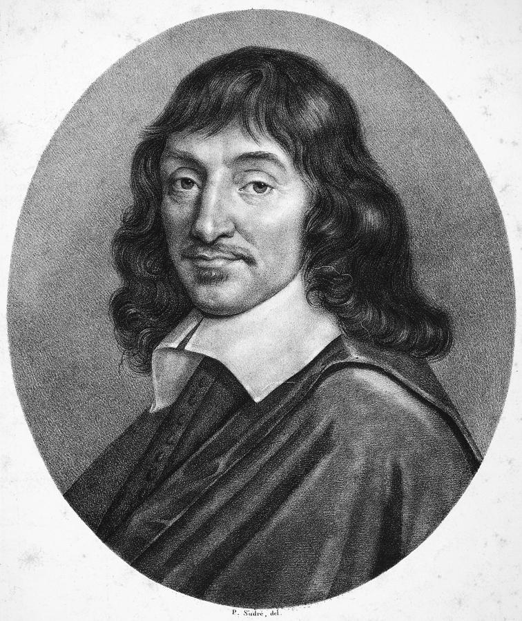

Рене Декарт
31 марта 1596 г. - 11 февраля 1650 г.

Детство и юность
Рене Декарт родился 21 марта 1596 года в маленьком городке Ла-Гэ в Турени. Род Декартов принадлежал к незнатному чиновному дворянству. Детство Рене провел в Турени. В 1612 году Декарт закончил школу. Он провел в ней восемь с половиной лет.
Рене Декарт родился 21 марта 1596 года в маленьком городке Ла-Гэ в Турени. Род Декартов принадлежал к незнатному чиновному дворянству. Детство Рене провел в Турени. В 1612 году Декарт закончил школу. Он провел в ней восемь с половиной лет.
Весной 1613 года Рене Декарт отправился в Париж: молодому дворянину нужно было позаботиться о приобретении светского лоска и завязать в столице необходимые для житейских успехов связи.После окончания коллегии Декарт продолжил образование. В 1616 в университете Пуатье он получил степень бакалавра права. В 1617 Декарт поступает на службу в армию и много путешествует по Европе.
Философия Декарта
Философия природы
Убедившись в существовании материального мира, Декарт приступает к исследованию его свойств. Главным свойством материальных вещей оказывается протяжение, которое может выступать в различных модификациях. Декарт отрицает существование пустого пространства на том основании, что везде, где есть протяжение, имеется и "протяженная вещь", res extensa. Другие качества материи мыслятся смутно и, возможно, считает Декарт, существуют только в восприятии, а в самих предметах отсутствуют.
Материя состоит из элементов огня, воздуха и земли, все различие которых состоит только в величине. Элементы не являются неделимыми и могут концепцию дискретности материи с тезисом об отсутствии пустоты, Рене Декарт выдвигает любопытнейший тезис о нестабильности и отсутствии определенной формы у мельчайших частиц вещества. Единственным способом передачи взаимодействий между элементами и состоящими из их смешения вещами Декарт признает соударение. Оно происходит по законам постоянства, вытекающим из неизменной сущности Бога. При отсутствии внешних воздействий вещи не меняют свое состояние и двигаются по прямой, являющейся символом постоянства. Кроме того, Декарт говорит о сохранении исходного количества движения в мире. Само движение, однако, изначально не свойственно материи, а привносится в нее Богом. Но уже одного первотолчка достаточно, чтобы из хаоса материи постепенно самостоятельно собрался правильный и гармоничный космос.
Тело и душа
Много времени Рене Декарт уделял изучению законов функционирования животных организмов. Он считал их тонкими машинами, способными самостоятельно адаптироваться к окружающей среде и адекватно реагировать на внешние воздействия. Испытанное воздействие передается в мозг, являющийся резервуаром "животных духов", мельчайших частиц, попадание которых в мышцы через поры, открывающиеся вследствие отклонений мозговой "шишковидной железы" (являющейся седалищем души), приводит к сокращениям этих мышц. Движение тела составляется последовательностью таких сокращений. Животные лишены душ и не нуждаются в них. Декарт говорил, что его больше удивляет наличие души у человека, чем ее отсутствие у животных. Наличие души у человека, однако, не бесполезно, так как душа может корректировать естественные реакции тела.
Скептицизм, конечно, существовал и до Декарта, и эти аргументы были известны еще грекам. Существовали и различные ответы на скептические возражения. Однако Декарт первым предложил использовать скептицизм в качестве инструмента исследования. Его скептицизм - не учение, а метод. После Декарта среди философов, ученых и историков получило распространение настороженное отношение к недостаточно обоснованным идеям, какой бы источник они ни имели: традицию, авторитет или личные особенности высказывающего их человека.
Методологический скептицизм, таким образом, образует только первую ступень. Декарт полагал, что если бы мы знали абсолютно достоверные первые принципы, то могли бы вывести из них все остальное знание. Поэтому поиск достоверного знания составляет вторую ступень его философии. Достоверность Декарт обнаруживает только в знании о своем собственном существовании: cogito, ergo sum ("я мыслю, следовательно, я существую"). Декарт рассуждает: у меня нет достоверного знания о существовании моего тела, ибо я мог бы быть животным или покинувшим тело духом, которому снится, что он человек; однако мой разум, мой опыт существуют несомненно и достоверно. Содержание мыслей или убеждений может быть ложным и даже абсурдным; однако сам факт мышления и верования достоверен. Если же я сомневаюсь в том, что мыслю, то по крайней мере достоверно то, что я сомневаюсь.
Тезис Декарта о том, что мы обладаем абсолютно достоверным знанием о существовании собственного сознания, признавался всеми мыслителями Нового времени (хотя был поднят вопрос о достоверности знания о нашем прошлом). Однако возникал трудный вопрос: можно ли быть уверенным, что все остальное, с чем мы очевидно сталкиваемся, не является простым порождением нашего ума? Порочный круг солипсизма ("Я" может знать только само себя) был логически неизбежен, и мы сталкиваемся с т.н. проблемой эгоцентризма. Эта проблема становится все более значимой по мере развития философии эмпиризма и достигает кульминационного пункта в философии Канта.
Итак, продолжим: уверившись в том, что можем доверять нашим способностям, мы приходим к пониманию, что материя существует, поскольку наши идеи о ней являются ясными и отчетливыми. Материя протяженна, занимает место в пространстве, движется, или перемещается, в этом пространстве. Это существенные свойства материи. Все другие ее свойства вторичны. Подобно этому, сущностью разума является мышление, а не протяжение, поэтому разум и материя совершенно различны. Следовательно, Вселенная дуалистична, т.е. состоит из двух не похожих друг на друга субстанций: духовной и телесной.
Дуалистическая философия сталкивается с тремя трудностями: онтологической, космологической и эпистемологической. Все они обсуждались мыслителями, которые развивали идеи Декарта. Прежде всего, познание предполагает установление тождества в кажущемся разнообразии; поэтому полагание принципиально неустранимой двойственности наносило удар самому духу философии. Возникли попытки свести дуализм к монизму, т.е. отрицать одну из двух субстанций или допустить существование единой субстанции, которая бы являлась одновременно и разумом и материей. Так, окказионалисты доказывали, что поскольку разум и тело по своей сути неспособны воздействовать друг на друга, то очевидные "причины", которые мы наблюдаем в природе, являются результатом прямого вмешательства Бога. Эта позиция получила логическое завершение в системе Спинозы. Трудно считать Бога чем-то иным, нежели Верховным Разумом; поэтому либо Бог и материя остаются дихотомически разделенными, либо материя сводится к идеям самого Бога (как у Беркли). Проблема монизма и дуализма занимала центральное положение в философии 17-18 вв.
Личная жизнь
О личной жизни философа известно не так много. Ряд биографов Декарта сходятся во мнении, что он никогда не был женат.
В зрелом возрасте мужчина был влюблен в служанку, которая забеременела от него и родила девочку Франсину. Рене до беспамятства любил внебрачную дочь, которая умерла от скарлатины в 5-летнем возрасте.
Смерть Франсины стала для Декарта настоящим ударом и наибольшей трагедией в жизни.
Современники математика утверждали, что в обществе он был высокомерным и малословным. Ему больше нравились находиться наедине с самим собой, однако в компании друзей он все же мог проявлять раскованность и активность в общении.
Смерть
На протяжении многих лет Декарт подвергался гонениям за свое свободомыслие и новый подход к науке.
За год до своей кончины ученый обосновался в Стокгольме, приняв приглашение от шведской королевы Кристины. Стоит заметить, что до этого они вели долгую переписку на разные темы.
Почти сразу после переезда в Швецию философ сильно простудился и умер. Рене Декарта не стало 11 февраля 1650 года в возрасте 53 лет.
Сегодня существует версия, согласно которой Декарта отравили мышьяком. Инициаторами его убийства могли выступать агенты католической церкви, которые с презрением относились к нему.
Вскоре после смерти Рене Декарта, его труды были внесены в «Индекс запрещенных книг», а Людовик XIV распорядился запретить преподавание его философии во всех учебных заведениях Франции.
Основные труды
- Геометрия
- Космогония: Два трактата
- Первоначала философии
- Размышления о первой философии…
- Рассуждение о методе
- Геометрия
- Космогония: Два трактата
- Первоначала философии
- Размышления о первой философии…
- Рассуждение о методе